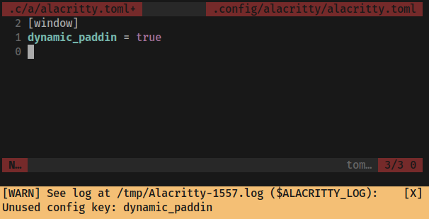

lacritty
lacritty
Alacritty Version 0.13.0 Release
Dec 27, 2023
Prebuilt binaries can be found in the
GitHub release.
Packaging
- Minimum Rust version has been bumped to 1.70.0
- Manpages are now generated using
scdoc(seeINSTALL.md)
Added
- Warnings for unused configuration file options 
- Config option
persistinhintsconfig section - Support for dynamically loading conpty.dll on Windows
- Support for keybindings with dead keys
Back/Forwardmouse buttons support in bindings- Copy global IPC options (
-w -1) for new windows - Bindings to create and navigate tabs on macOS
- Support startup notify protocol to raise initial window on Wayland/X11
- Debug option
prefer_eglto prioritize EGL over other display APIs - Inline vi-mode search using
f/F/t/T window.blurconfig option to request blur for transparent windows--optionargument foralacritty msg create-window- Support for
DECRQM/DECRPMescape sequences - Support for kitty's keyboard protocol
Changed
- Mode-specific bindings can now be bound in any mode for easier macros
--helpoutput is more compact now and uses more neutral palette- Configuration file now uses TOML instead of YAML Run
- Deprecated config option
draw_bold_text_with_bright_colors, use - Deprecated config option
key_bindings, usekeyboard.bindings - Deprecated config option
mouse_bindings, usemouse.bindings - The default colorscheme is now based on base16 classic dark
- IME popup now tries to not obscure the current cursor line
- The double click threshold was raised to
400ms - OSC 52 paste ability is now disabled by default; use
terminal.osc52to adjust it - Apply
colors.transparent_background_colorsfor selections, hints, and search matches - Underline full hint during keyboard selection
- Synchronized updates now use
CSI 2026instead of legacyDCSvariant - In mouse mode with
Shiftpressed, mouse bindings withoutShiftare only triggered if no exact binding (i.e. one with - Use built-in font for powerline symbols from
U+E0B0toU+E0B3 - Default
bell.animationis nowLinear IncreaseFontSize/DecreaseFontSizestep is now 1pxfont.sizeprecision was raised to 6 floating point digits- Default font size to
11.25matching 15px Xft.dpiis now reloaded when xsettingd change its value on X11
alacritty migrate to automatically convert all configuration files
colors.draw_bold_text_with_bright_colors

Shift) is found.
Fixed
- Unconditional query of xdg-portal settings on Wayland
Maximizedstartup mode not filling the screen properly on GNOME WaylandOptionAsAltwithOnlyLeft/OnlyRightsettings not working properly on macOS- Default Vi key bindings for
Last/Firstactions not working on X11/Wayland - Cut off wide characters in preedit string
- Scrolling on touchscreens
- Double clicking on CSD titlebar not always maximizing a window on Wayland
- Excessive memory usage when using regexes with a large number of possible states
window.decorations_theme_variantnot live reloading- Copy/Paste being truncated to 64KiB on Wayland
- X11 clipboard lagging behind sometimes
- High wakeup count on Wayland due to clipboard polling
- Blocking paste freezing alacritty on Wayland
Commandmodifier persisting afterCmd + Tabon macOS- Crash on exit when using NVIDIA binary drivers on Wayland
window.startup_modeapplied to window again when creating new tab- Crash when leaving search after resize
- Cursor being hidden after reaching cursor blinking timeout
- Message bar content getting stuck after closing with multiple messages on Wayland
- Vi cursor position not redrawn on PageUp/PageDown without scrollback
- Cursor not updating when blinking and viewport is scrolled
- Failure to start with recent version of mesa's i915 driver
- Error when using
charsinside the mouse bindings
Removed
- Config option
background_opacity, usewindow.background_opacity - Config option
colors.search.bar, usecolors.footer_barinstead - Config option
mouse.url, use thehintsconfig section - Config options
mouse.double_clickandmouse.triple_click